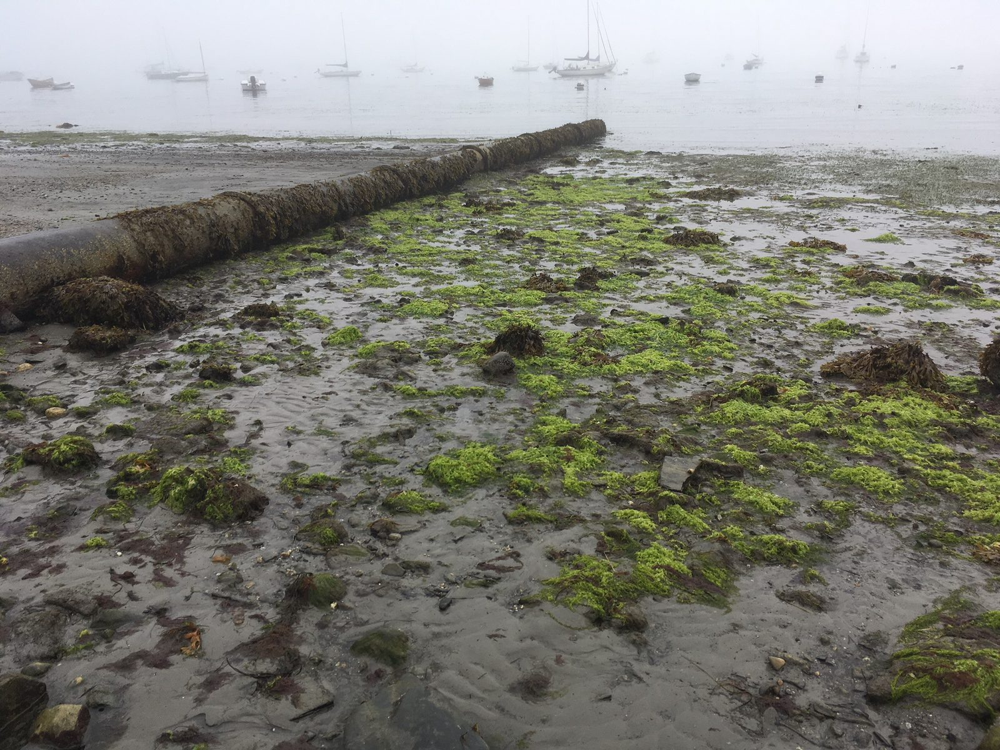
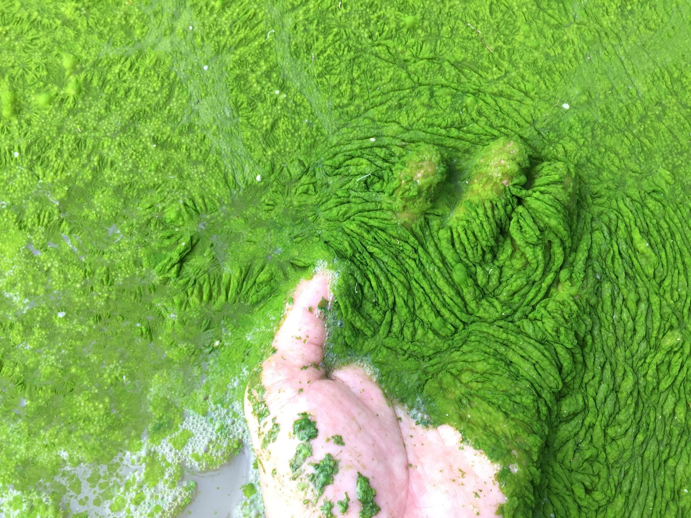

Synthetic fertilizers are harmful to Casco Bay
PSP pressed the city for a companion to our pesticide ordinance: a ban on synthetic fertilizers. In April 2019 we rallied our supporters to attend a city council workshop on the question and invited several experts to testify how synthetic fertilizers are harmful to the long term health of our soil and how runoff causes dead zones in our bay. We are happy to report that our council was very receptive to banning these fertilizers and went on to write an ordinance.
The problem with synthetic fertilizers
Synthetic fertilizers are a quick fix for plants but do not feed the soil on which plants depend. The microbes and healthy life in the soil cannot interact with the chemicals and, as a result, the soil degrades, growing less able to nourish the plants. That leads to a cycle of adding more chemical fertilizer even though the plants can only absorb 10% of these synthetic fertilizers. The soil becomes compacted by frequent applications of fertilizers, and, since these fertilizers are water-soluble, most of an application runs off into city drains or goes directly into our bay. Heavier rainstorms make the runoff worse.
In the bay the excessive nitrogen from the runoff causes algal blooms which lead to a depletion of oxygen. Shellfish beds can be smothered and fish can die or leave the area permanently. We depend on bait fish for our lobster industry and lobsters themselves can be threatened.


Spreading compost adds humus, aerates the soil and feeds the organisms that keep grass and plants healthy.
Fertilizer ordinance is passed
After many meetings, the fertilizer ordinance was passed in November of 2020. All along, this ordinance belonged with the previously passed pesticide ordinance as both pesticide and synthetic fertilizer are harmful to people, the soil, the ocean, and the environment at large. The healthy alternative is organic land care which nurtures soil life and protects the health of people and their pets. Fortunately, many communities in Maine are starting to see the value of organic land care.
For anyone wanting more information, go to: beyondpesticides.org. They are at the forefront of this issue and greatly value the stand we have taken in South Portland.
Grow Healthy South Portland: the City has collected specific information for healthy land care:
Further reading
- To Nurture Nature, Neglect Your Lawn — New York Times, Apr. 15, 2019
- How Fertilizers Harm Earth More Than Help Your Lawn — Scientific American
- The Hidden Costs of Chemical Fertilizer — Plant Catalyst